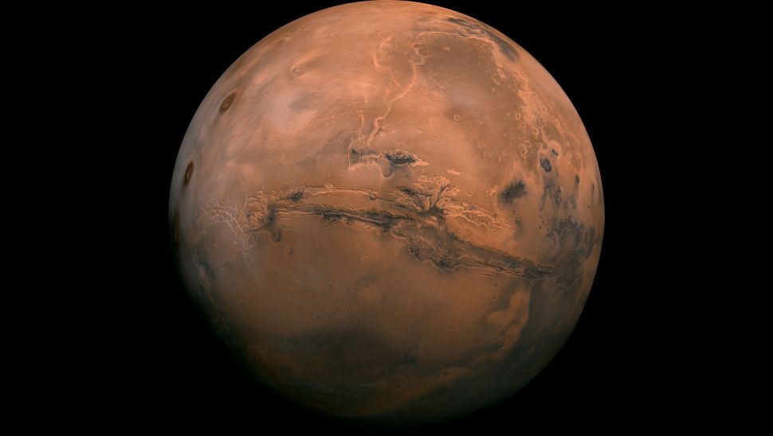

Introduction
The order of the planets in the solar system, starting nearest the sun and working outward is the following: Mercury, Venus, Earth, Mars, Jupiter, Saturn, Uranus, Neptune and then the possible Planet Nine. Ever since the discovery of Pluto in 1930, kids grew up learning that the solar system has nine planets. That all changed in the late 1990s when astronomers started arguing about whether Pluto was indeed a planet. In a highly controversial decision, the International Astronomical Union ultimately decided in 2006 to designate Pluto as a "dwarf planet," reducing the list of the solar system's true planets to just eight. If you insist on including Pluto, it would come after Neptune on the list. Pluto is truly way out there and on a wildly tilted, elliptical orbit (two of the several reasons it was demoted. i ( Robert & Daisy , 2021) Astronomers, however, are still hunting for another possible planet in our solar system, a true ninth planet, after mathematical evidence of its existence was revealed on Jan. 20, 2016. The alleged "Planet Nine," also called "Planet X," is believed to be about 10 times the mass of Earth and 5,000 times the mass of Pluto. Read more
What is planet?
WHAT IS PLANET? The IAU defines a true planet as a body that circles the sun without being some other object's satellite; is large enough to be rounded by its own gravity (but not so big that it begins to undergo nuclear fusion, like a star); and has "cleared its neighborhood" of most other orbiting bodies. Yeah, it's a mouthful. But that restrictive definition helped isolate what should and should not be considered a planet — a problem that arose as astronomers discovered more and more planet-like objects in the solar system. Pluto was among the bodies that didn't make the cut and was re-classified as a dwarf planet. The problem with Pluto, aside from its small size and offbeat orbit, is that it doesn't clear its neighborhood of debris — it shares its space with lots of other objects in the Kuiper Belt. Still, the demotion of Pluto remains controversial. The IAU planet definition also put other small, round worlds into the dwarf planet category, including the Kuiper Belt objects Eris, Haumea and Makemake